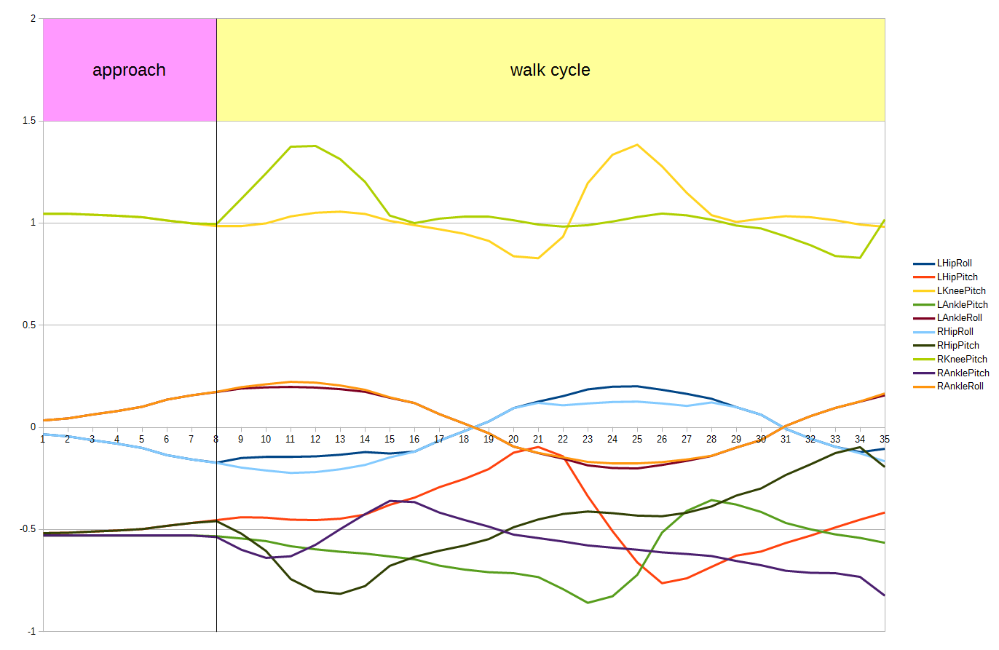

This benchmarks aims at developing a computer program that controls a humanoid robot to walk as fast as possible on a 10-meter track. The programming language is Python and the humanoid robot model is an Aldebaran NAO robot.
The benchmark metric is the time t spent by the robot to cover the 10-meter distance. The stopwatch starts as soon as the simulation starts. When the robot passes in front of the stopwatch, a sensor detects the presence of the robot and stops the timer. At this point, the time displayed on the stopwatch is recorded as the performance of the robot. If the robot falls down or tries to go on all fours, the robot is disqualified. Such a situation is detected if the vertical position of the center of its body falls below 20 cm.
If you look at the Python program controlling the NAO robot, you will see that this program simply plays a motion file called forward.motion:
def run(self):
walk = Motion('forward.motion')
walk.setLoop(True)
walk.play()
while True:
if walk.getTime() == 1360:
walk.setTime(360)
if self.step(self.timeStep) == -1:
break
The motion lasts 1360 milliseconds (1,36 seconds) and is divided in two parts: the first part lasts 360 ms and moves the robot from the initial position to the pose corresponding to the beginning of the walk cycle. The second part is the walk cycle which lasts 1000 ms and should be repeated forever. Therefore the controller will check when the motion is over (motion time reaches 1360 ms) and it will restart the walk cycle of the motion, i.e., it will reset the motion time to 360 ms, so that a new walk cycle is started. This will be repeated again and again, so that the robot will walk forever.
The motion file contains the joint positions (in radians) for each articulation of the legs which are used in the walking motion:
The forward.motion file can be opened in a spreadsheet program such a LibreOffice Calc or Excel, modified and saved again.
In order to further improve the walk speed, you can try to: